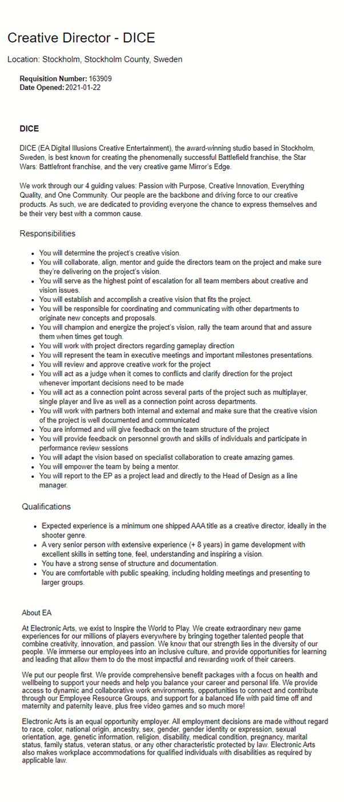

Teodore Bulloch
ePortfolio
Github Repo:github.com/TeodoreBulloch/
Student ID: S3901063
Student Email: S3901063@student.rmit.edu.au
|
Teodore BullochePortfolio |
Github Repo:github.com/TeodoreBulloch/ |
Student ID: S3901063 |
||
Student Email: S3901063@student.rmit.edu.au |
Ideal Job |
|---|
|  |
• Why this position is appealing to me: As a Creative Director it is your job to bridge together multiple departments to create a unified creative vision that fills the intended project goals. You essentially act as the authority over aspects of the game such as the gameplay, visual style, story, audio assets, cinematics and marketing materials. DICE is subsidiary of the controversial Electronic Studios, but they’ve developed many first person shooters that I love to play such as the rebooted STAR WARS BATTLEFRONT series. That part that’s most appealing to me about being a Creative Director is the entire process of creating and developing a project. I love exploring all my creative possibilities, seeing what sticks and what doesn’t and trying to find more ways to be fresh and innovative. I want to slowly evolve these ideas and create a strong vision of what the completed product should look like. But the most important part is putting in the work to make this vision a reality, when I’m dedicated and passionate about something, I will put my blood, sweat and tears into any project to try and realise my ideas and see it through right till the end. • The skills, qualifications and experience required for this position: Some of the minimum qualifications of this job title include: - Experience in shipping at least 1 AAA title as a creative director - +8 years experience in game development These qualifications are important as DICE is a well-respected AAA publisher, they need to make sure that those who manage their projects are of the highest standards and already comfortable to do what is asked of them. But in addition to these qualifications, I need to be quite comfortable with public-speaking to represent the creative studios and also good with structure and documentation to maintain a high level of quality and process control. • The skills, qualifications and experience I currently have: I have experience in using a GameEngine with that being GameMaker I have had 0 years’ experience in professional game development Although I have had a little experience in making little homemade and school project games it hardly counts for anything. • How I will obtain the skills, qualifications and experience required for the position: This role requires a seasoned and experienced creative director that has already worked on publishing AAA games. This would be something I do towards the end or middle of my career as it would take a long to meet the qualifications. I would want to build up a portfolio as I moved up through the game industry, one of the first things I’d want to do is publish my own game. It wouldn’t have to be anything big or crazy just a simple project that is done very well in a popular game engine such as Unity or Unreal Engine. This would help me actually get into the industry along with a relevant degree. I’d have to get used to solely doing the grunt work such as working on specific features or aspects of the game. This could include being a Level Game Designer or UX designer for just small mobile games and little projects. Eventually I’d earn enough experience to become a Game Designer on these projects before moving to work onto more important projects such as their AAA games. After developing 8 years of experience, I’d hopefully be able to move to being the Creative Director now uniting the multiple departments to achieve the project of the unified vision that I have carry on. But one problem with this job path is that it would involve me having to move to different countries as I advance on with my career. Dice is primarily located in Stockholm, Sweden and although they have jobs open in other countries, the best work is either in America or Sweden. Having to live in different continents over a few years is a little worrying for me as if something goes wrong such as unexpected firing or accidents could set me back real far as I don’t have the same safety nets as a resident of those countries. I also wouldn’t want to work somewhere where I don’t want to start a family so those are just a few problems that I see with my current plan, but luckily its all subject to change. |